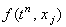
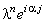
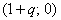

|
3.1. Характеристика.
Неявная разностная схема для уравнения (6.1) имеет вид:
Учитывая порядок аппроксимации разностных операторов, составляющих данную разностную схему,
легко видеть, что она, как и явная разностная схема (6.2), аппроксимирует дифференциальное уравнение (6.1) с первым порядком и по времени,
и по координате:
Исследуем устойчивость неявной разностной схемы (6.5) с
помощью спектрального метода. Для этого отбрасываем член , наличие которого, как известно, не
оказывает влияния на устойчивость разностной схемы, и представляем решение в виде гармоники (3.7):
Далее, упрощаем полученное выражение, деля левую и правую его части на :
Используя зависимости (3.9), (3.10), получаем
Группируя члены, содержащие  , в левой части уравнения, выразим величину, обратную :
При этом необходимое условие устойчивости разностных схем (3.8) также преобразуем к виду:
Комплексный вид полученного выражения свидетельствует о том, что для устойчивости разностной схемы
(6.5) согласно условию (6.6) требуется, чтобы величины, обратные собственным числам оператора перехода,
были расположены вне или на границе круга радиусом 1, центр которого находится в начале координат
комплексной плоскости. , в левой части уравнения, выразим величину, обратную :
При этом необходимое условие устойчивости разностных схем (3.8) также преобразуем к виду:
Комплексный вид полученного выражения свидетельствует о том, что для устойчивости разностной схемы
(6.5) согласно условию (6.6) требуется, чтобы величины, обратные собственным числам оператора перехода,
были расположены вне или на границе круга радиусом 1, центр которого находится в начале координат
комплексной плоскости.
Введём следующие обозначения:
Следовательно, величины, обратные собственным числам оператора перехода, расположены на комплексной
плоскости на окружности с центром в точке  и радиусом r (см. рисунок). Данная окружность
находится вне круга, соответствующего условию устойчивости, при любом значении r. Это означает, что
неявная разностная схема (6.5) абсолютно устойчива.
|